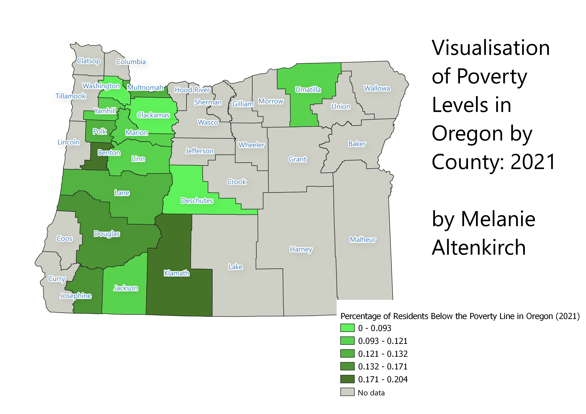

Homework 6: Mapping Poverty Levels in Oregon Using Census Data
by Melanie Altenkirch. September 28, 2022.
This map details, by percentage of residents in each county, the amount of Oregon residents that fall below the poverty line.
The data is taken from 2021 U.S. Census findings for the state of Oregon. The counties outlines in gray on the map did not have available data from the Census.
The poverty level is measured by the Census as a minimum level of resources available to people to meet basic need. The Supplemental Poverty Measure of the Census assesses these basic needs to include food, housing, shelter, and utilities, and is adjusted to each state.
As seen in the chloropleth, some of the highest measured rates of poverty are seen in Oregon's Benton and Klamanth Counties, with Josephine, Douglas, Multnomah (home to Portland), and Lane Counties following. The darker shades of green in the map visualize higher rates of poverty. The chloropleth was graded using natural breaks to divide the population data.
